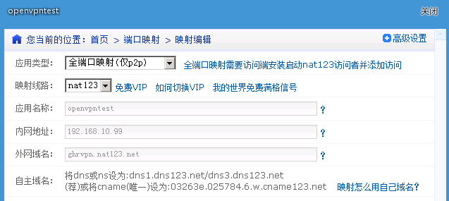
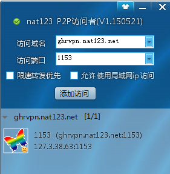

CENTOS6.6搭建OPENVPN
posted on 12 Apr 2016 under category linux
yum install http://dl.fedoraproject.org/pub/epel/6/i386/epel-release-6-8.noarch.rpm
yum install -y openssl openssl-devel lzo lzo-devel pam pam-devel automake pkgconfig
yum install openvpn
wget https://github.com/OpenVPN/easy-rsa/archive/release/2.x.zip
unzip 2.x.zip
cd easy-rsa-release-2.x
cp -rf easy-rsa /etc/openvpn/
cd /etc/openvpn/easy-rsa/2.0/
ln -s openssl-1.0.0.cnf openssl.cnf
chmod +x vars
修改vars文件中以下配置项：
# vim vars
...
# Increase this to 2048 if you
# are paranoid. This will slow
# down TLS negotiation performance
# as well as the one-time DH parms
# generation process.
export KEY_SIZE=1024
...
# These are the default values for fields
# which will be placed in the certificate.
# Don't leave any of these fields blank.
export KEY_COUNTRY="CN"
export KEY_PROVINCE="SiChuan"
export KEY_CITY="ChenDu"
export KEY_ORG="hlkj"
export KEY_EMAIL="gaohuirong@ynhualikj.com"
export KEY_OU="cdyf"
...
执行vars文件使环境变量生效：
# source ./vars
NOTE: If you run ./clean-all, I will be doing a rm -rf on /etc/openvpn/easy-rsa/2.0/keys
./clean-all
生成服务器端CA证书，由于在vars文件中做过缺省设置，在出现交互界面时，直接一路回车即可：
./build-ca
生成服务器证书，仍然是在出现交互界面时，直接一路回车，并在结尾询问[y/n]时输入y即可：
./build-key-server server
生成DH验证文件：
./build-dh
生成TLS私密文件：
cd keys
openvpn --genkey --secret ta.key
cd ..
生成客户端证书，例如eric与rainbow两个用户：
./build-key client1
./build-key client2
cp /usr/share/doc/openvpn-2.3.10/sample/sample-config-files/server.conf /etc/openvpn/
vim /etc/openvpn/server.conf
#################################################
# Sample OpenVPN 2.0 config file for#
# multi-client server. #
# #
# This file is for the server side #
# of a many-clients <-> one-server #
# OpenVPN configuration.#
# #
# OpenVPN also supports #
# single-machine <-> single-machine #
# configurations (See the Examples page #
# on the web site for more info). #
# #
# This config should work on Windows#
# or Linux/BSD systems. Remember on#
# Windows to quote pathnames and use#
# double backslashes, e.g.: #
# "C:\\Program Files\\OpenVPN\\config\\foo.key" #
# #
# Comments are preceded with '#' or ';' #
#################################################
# Which local IP address should OpenVPN
# listen on? (optional)
;local a.b.c.d
# Which TCP/UDP port should OpenVPN listen on?
# If you want to run multiple OpenVPN instances
# on the same machine, use a different port
# number for each one. You will need to
# open up this port on your firewall.
port 1153
# TCP or UDP server?
;proto tcp
proto udp
# "dev tun" will create a routed IP tunnel,
# "dev tap" will create an ethernet tunnel.
# Use "dev tap0" if you are ethernet bridging
# and have precreated a tap0 virtual interface
# and bridged it with your ethernet interface.
# If you want to control access policies
# over the VPN, you must create firewall
# rules for the the TUN/TAP interface.
# On non-Windows systems, you can give
# an explicit unit number, such as tun0.
# On Windows, use "dev-node" for this.
# On most systems, the VPN will not function
# unless you partially or fully disable
# the firewall for the TUN/TAP interface.
;dev tap
dev tun
# Windows needs the TAP-Win32 adapter name
# from the Network Connections panel if you
# have more than one. On XP SP2 or higher,
# you may need to selectively disable the
# Windows firewall for the TAP adapter.
# Non-Windows systems usually don't need this.
;dev-node MyTap
# SSL/TLS root certificate (ca), certificate
# (cert), and private key (key). Each client
# and the server must have their own cert and
# key file. The server and all clients will
# use the same ca file.
#
# See the "easy-rsa" directory for a series
# of scripts for generating RSA certificates
# and private keys. Remember to use
# a unique Common Name for the server
# and each of the client certificates.
#
# Any X509 key management system can be used.
# OpenVPN can also use a PKCS #12 formatted key file
# (see "pkcs12" directive in man page).
ca easy-rsa/2.0/keys/ca.crt
cert easy-rsa/2.0/keys/server.crt
key easy-rsa/2.0/keys/server.key
# This file should be kept secret
# Diffie hellman parameters.
# Generate your own with:
# openssl dhparam -out dh2048.pem 2048
dh easy-rsa/2.0/keys/dh1024.pem
# Network topology
# Should be subnet (addressing via IP)
# unless Windows clients v2.0.9 and lower have to
# be supported (then net30, i.e. a /30 per client)
# Defaults to net30 (not recommended)
;topology subnet
# Configure server mode and supply a VPN subnet
# for OpenVPN to draw client addresses from.
# The server will take 10.8.0.1 for itself,
# the rest will be made available to clients.
# Each client will be able to reach the server
# on 10.8.0.1. Comment this line out if you are
# ethernet bridging. See the man page for more info.
server 10.8.0.0 255.255.255.0
# Maintain a record of client <-> virtual IP address
# associations in this file. If OpenVPN goes down or
# is restarted, reconnecting clients can be assigned
# the same virtual IP address from the pool that was
# previously assigned.
ifconfig-pool-persist ipp.txt
# Configure server mode for ethernet bridging.
# You must first use your OS's bridging capability
# to bridge the TAP interface with the ethernet
# NIC interface. Then you must manually set the
# IP/netmask on the bridge interface, here we
# assume 10.8.0.4/255.255.255.0. Finally we
# must set aside an IP range in this subnet
# (start=10.8.0.50 end=10.8.0.100) to allocate
# to connecting clients. Leave this line commented
# out unless you are ethernet bridging.
;server-bridge 10.8.0.4 255.255.255.0 10.8.0.50 10.8.0.100
# Configure server mode for ethernet bridging
# using a DHCP-proxy, where clients talk
# to the OpenVPN server-side DHCP server
# to receive their IP address allocation
# and DNS server addresses. You must first use
# your OS's bridging capability to bridge the TAP
# interface with the ethernet NIC interface.
# Note: this mode only works on clients (such as
# Windows), where the client-side TAP adapter is
# bound to a DHCP client.
;server-bridge
# Push routes to the client to allow it
# to reach other private subnets behind
# the server. Remember that these
# private subnets will also need
# to know to route the OpenVPN client
# address pool (10.8.0.0/255.255.255.0)
# back to the OpenVPN server.
;push "route 192.168.10.0 255.255.255.0"
;push "route 192.168.20.0 255.255.255.0"
# To assign specific IP addresses to specific
# clients or if a connecting client has a private
# subnet behind it that should also have VPN access,
# use the subdirectory "ccd" for client-specific
# configuration files (see man page for more info).
# EXAMPLE: Suppose the client
# having the certificate common name "Thelonious"
# also has a small subnet behind his connecting
# machine, such as 192.168.40.128/255.255.255.248.
# First, uncomment out these lines:
;client-config-dir ccd
;route 192.168.40.128 255.255.255.248
# Then create a file ccd/Thelonious with this line:
# iroute 192.168.40.128 255.255.255.248
# This will allow Thelonious' private subnet to
# access the VPN. This example will only work
# if you are routing, not bridging, i.e. you are
# using "dev tun" and "server" directives.
# EXAMPLE: Suppose you want to give
# Thelonious a fixed VPN IP address of 10.9.0.1.
# First uncomment out these lines:
;client-config-dir ccd
;route 10.9.0.0 255.255.255.252
# Then add this line to ccd/Thelonious:
# ifconfig-push 10.9.0.1 10.9.0.2
# Suppose that you want to enable different
# firewall access policies for different groups
# of clients. There are two methods:
# (1) Run multiple OpenVPN daemons, one for each
# group, and firewall the TUN/TAP interface
# for each group/daemon appropriately.
# (2) (Advanced) Create a script to dynamically
# modify the firewall in response to access
# from different clients. See man
# page for more info on learn-address script.
;learn-address ./script
# If enabled, this directive will configure
# all clients to redirect their default
# network gateway through the VPN, causing
# all IP traffic such as web browsing and
# and DNS lookups to go through the VPN
# (The OpenVPN server machine may need to NAT
# or bridge the TUN/TAP interface to the internet
# in order for this to work properly).
push "redirect-gateway def1 bypass-dhcp"
# Certain Windows-specific network settings
# can be pushed to clients, such as DNS
# or WINS server addresses. CAVEAT:
# http://openvpn.net/faq.html#dhcpcaveats
# The addresses below refer to the public
# DNS servers provided by opendns.com.
push "dhcp-option DNS 192.168.10.15"
push "dhcp-option DNS 61.139.2.69"
# Uncomment this directive to allow different
# clients to be able to "see" each other.
# By default, clients will only see the server.
# To force clients to only see the server, you
# will also need to appropriately firewall the
# server's TUN/TAP interface.
client-to-client
# Uncomment this directive if multiple clients
# might connect with the same certificate/key
# files or common names. This is recommended
# only for testing purposes. For production use,
# each client should have its own certificate/key
# pair.
#
# IF YOU HAVE NOT GENERATED INDIVIDUAL
# CERTIFICATE/KEY PAIRS FOR EACH CLIENT,
# EACH HAVING ITS OWN UNIQUE "COMMON NAME",
# UNCOMMENT THIS LINE OUT.
duplicate-cn
# The keepalive directive causes ping-like
# messages to be sent back and forth over
# the link so that each side knows when
# the other side has gone down.
# Ping every 10 seconds, assume that remote
# peer is down if no ping received during
# a 120 second time period.
keepalive 10 120
# For extra security beyond that provided
# by SSL/TLS, create an "HMAC firewall"
# to help block DoS attacks and UDP port flooding.
#
# Generate with:
# openvpn --genkey --secret ta.key
#
# The server and each client must have
# a copy of this key.
# The second parameter should be '0'
# on the server and '1' on the clients.
tls-auth easy-rsa/2.0/keys/ta.key 0 # This file is secret
# Select a cryptographic cipher.
# This config item must be copied to
# the client config file as well.
;cipher BF-CBC# Blowfish (default)
;cipher AES-128-CBC # AES
;cipher DES-EDE3-CBC # Triple-DES
# Enable compression on the VPN link.
# If you enable it here, you must also
# enable it in the client config file.
comp-lzo
# The maximum number of concurrently connected
# clients we want to allow.
;max-clients 100
# It's a good idea to reduce the OpenVPN
# daemon's privileges after initialization.
#
# You can uncomment this out on
# non-Windows systems.
user nobody
group nobody
# The persist options will try to avoid
# accessing certain resources on restart
# that may no longer be accessible because
# of the privilege downgrade.
persist-key
persist-tun
# Output a short status file showing
# current connections, truncated
# and rewritten every minute.
status /tmp/openvpn-status.log
# By default, log messages will go to the syslog (or
# on Windows, if running as a service, they will go to
# the "\Program Files\OpenVPN\log" directory).
# Use log or log-append to override this default.
# "log" will truncate the log file on OpenVPN startup,
# while "log-append" will append to it. Use one
# or the other (but not both).
log/tmp/openvpn/openvpn.log
log-append /tmp/openvpn/openvpn.log
# Set the appropriate level of log
# file verbosity.
#
# 0 is silent, except for fatal errors
# 4 is reasonable for general usage
# 5 and 6 can help to debug connection problems
# 9 is extremely verbose
verb 3
# Silence repeating messages. At most 20
# sequential messages of the same message
# category will be output to the log.
;mute 20
创建日志文件目录：
mkdir -p /tmp/openvpn
chown openvpn:openvpn /tmp/openvpn
/etc/init.d/openvpn start
chkconfig openvpn on
vim /etc/sysctl.conf
1 ...
2 net.ipv4.ip_forward = 1
3 ...
sysctl -p
必须得打开iptables做nat转发
访问局域网需要在这里配置
iptables -t nat -A POSTROUTING -s 10.8.0.0/24 -j MASQUERADE
iptables -t nat -A POSTROUTING -s 192.168.10.0/24 -j MASQUERADE
iptables -A INPUT -p udp --dport 1153 -j ACCEPT
iptables -A INPUT -m state --state ESTABLISHED,RELATED -j ACCEPT
/etc/init.d/iptables save
或者直接关闭iptables
/etc/init.d/iptables restart
chkconfig iptables on
| 注意：如果使用的是云主机如EC2，端口过滤相关的配置则需要跳过，然后到Security Group中进行设置。 |
配置用户client1客户端的配置文件
cp /usr/share/doc/openvpn-2.3.10/sample/sample-config-files/client.conf /etc/openvpn/easy-rsa/2.0/keys/client.ovpn
vi /etc/openvpn/easy-rsa/2.0/keys/client.ovpn
##############################################
# Sample client-side OpenVPN 2.0 config file #
# for connecting to multi-client server. #
##
# This configuration can be used by multiple #
# clients, however each client should have #
# its own cert and key files.#
##
# On Windows, you might want to rename this #
# file so it has a .ovpn extension #
##############################################
# Specify that we are a client and that we
# will be pulling certain config file directives
# from the server.
client
# Use the same setting as you are using on
# the server.
# On most systems, the VPN will not function
# unless you partially or fully disable
# the firewall for the TUN/TAP interface.
;dev tap
dev tun
# Windows needs the TAP-Win32 adapter name
# from the Network Connections panel
# if you have more than one. On XP SP2,
# you may need to disable the firewall
# for the TAP adapter.
;dev-node MyTap
# Are we connecting to a TCP or
# UDP server? Use the same setting as
# on the server.
;proto tcp
proto udp
# The hostname/IP and port of the server.
# You can have multiple remote entries
# to load balance between the servers.
remote 192.168.10.99 1153
;remote my-server-2 1194
# Choose a random host from the remote
# list for load-balancing. Otherwise
# try hosts in the order specified.
;remote-random
# Keep trying indefinitely to resolve the
# host name of the OpenVPN server. Very useful
# on machines which are not permanently connected
# to the internet such as laptops.
resolv-retry infinite
# Most clients don't need to bind to
# a specific local port number.
nobind
# Downgrade privileges after initialization (non-Windows only)
;user nobody
;group nobody
# Try to preserve some state across restarts.
persist-key
persist-tun
# If you are connecting through an
# HTTP proxy to reach the actual OpenVPN
# server, put the proxy server/IP and
# port number here. See the man page
# if your proxy server requires
# authentication.
;http-proxy-retry # retry on connection failures
;http-proxy [proxy server] [proxy port #]
# Wireless networks often produce a lot
# of duplicate packets. Set this flag
# to silence duplicate packet warnings.
;mute-replay-warnings
# SSL/TLS parms.
# See the server config file for more
# description. It's best to use
# a separate .crt/.key file pair
# for each client. A single ca
# file can be used for all clients.
ca ca.crt
cert client1.crt
key client1.key
# Verify server certificate by checking that the
# certicate has the correct key usage set.
# This is an important precaution to protect against
# a potential attack discussed here:
# http://openvpn.net/howto.html#mitm
#
# To use this feature, you will need to generate
# your server certificates with the keyUsage set to
# digitalSignature, keyEncipherment
# and the extendedKeyUsage to
# serverAuth
# EasyRSA can do this for you.
remote-cert-tls server
# If a tls-auth key is used on the server
# then every client must also have the key.
tls-auth ta.key 1
# Select a cryptographic cipher.
# If the cipher option is used on the server
# then you must also specify it here.
;cipher x
# Enable compression on the VPN link.
# Don't enable this unless it is also
# enabled in the server config file.
comp-lzo
# Set log file verbosity.
verb 3
# Silence repeating messages
;mute 20
下载地址：https://openvpn.net/index.php/download/community-downloads.html
然后双击安装文件，点击下一步即可
将服务器端生成的相关证书下载下来，拷贝到客户端windows的openvpn的安装目录下的config目录下
config目录下有：
- client.ovpn
- ta.key
- ca.crt
- client1.crt
- client1.key
启动客户端，双击图形界面
若openvpn服务器无公网IP，则首先把openvpn服务器上的server.conf和客户端上的client.ov[n文件里的udp改为tcp 然后用nat123做一个端口映射 
然后在客户端安装nat123 登录nat123访问者 
最后登录即可